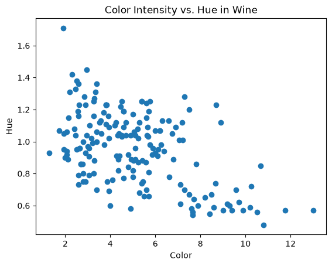

Correlation & Covariance#
This week we’ve discussed measures of centering and variation. Today, we’ll discuss measures of relationship between datasets: correlation and covariance.
import pandas as pd
import matplotlib.pyplot as plt
import numpy as np
---------------------------------------------------------------------------
ModuleNotFoundError Traceback (most recent call last)
Cell In[1], line 1
----> 1 import pandas as pd
2 import matplotlib.pyplot as plt
3 import numpy as np
ModuleNotFoundError: No module named 'pandas'
Motivation#
Consider the wine dataset from GitHub: click here for Datasets folder
wine = pd.read_csv(r"https://raw.githubusercontent.com/garrett-kepler/Math-300----Mathematical-Computing/refs/heads/main/Datasets/wine.csv")
wine
| Class | Alcohol | Malic acid | Ash | Alcalinity of ash | Magnesium | Total phenols | Flavanoids | Nonflavanoid phenols | Proanthocyanins | Color intensity | Hue | OD280/OD315 of diluted wines | Proline | |
|---|---|---|---|---|---|---|---|---|---|---|---|---|---|---|
| 0 | 1 | 14.23 | 1.71 | 2.43 | 15.6 | 127 | 2.80 | 3.06 | 0.28 | 2.29 | 5.64 | 1.04 | 3.92 | 1065 |
| 1 | 1 | 13.20 | 1.78 | 2.14 | 11.2 | 100 | 2.65 | 2.76 | 0.26 | 1.28 | 4.38 | 1.05 | 3.40 | 1050 |
| 2 | 1 | 13.16 | 2.36 | 2.67 | 18.6 | 101 | 2.80 | 3.24 | 0.30 | 2.81 | 5.68 | 1.03 | 3.17 | 1185 |
| 3 | 1 | 14.37 | 1.95 | 2.50 | 16.8 | 113 | 3.85 | 3.49 | 0.24 | 2.18 | 7.80 | 0.86 | 3.45 | 1480 |
| 4 | 1 | 13.24 | 2.59 | 2.87 | 21.0 | 118 | 2.80 | 2.69 | 0.39 | 1.82 | 4.32 | 1.04 | 2.93 | 735 |
| ... | ... | ... | ... | ... | ... | ... | ... | ... | ... | ... | ... | ... | ... | ... |
| 173 | 3 | 13.71 | 5.65 | 2.45 | 20.5 | 95 | 1.68 | 0.61 | 0.52 | 1.06 | 7.70 | 0.64 | 1.74 | 740 |
| 174 | 3 | 13.40 | 3.91 | 2.48 | 23.0 | 102 | 1.80 | 0.75 | 0.43 | 1.41 | 7.30 | 0.70 | 1.56 | 750 |
| 175 | 3 | 13.27 | 4.28 | 2.26 | 20.0 | 120 | 1.59 | 0.69 | 0.43 | 1.35 | 10.20 | 0.59 | 1.56 | 835 |
| 176 | 3 | 13.17 | 2.59 | 2.37 | 20.0 | 120 | 1.65 | 0.68 | 0.53 | 1.46 | 9.30 | 0.60 | 1.62 | 840 |
| 177 | 3 | 14.13 | 4.10 | 2.74 | 24.5 | 96 | 2.05 | 0.76 | 0.56 | 1.35 | 9.20 | 0.61 | 1.60 | 560 |
178 rows × 14 columns
We have a lot of wines with a lot of features. Let’s visualize color intensity and hue:
# collecting the data
colors = wine['Color intensity']
hue = wine['Hue']
# plotting
plt.scatter(colors, hue)
plt.title('Color Intensity vs. Hue in Wine')
plt.xlabel('Color')
plt.ylabel('Hue')
Text(0, 0.5, 'Hue')

Are the two features related? If color intensity increases, what happens to hue? How do we quantify this?
Covariance#
Covariance of two datasets \(X\) and \(Y\) formulaically is:
where
\(x_i\) is a data point from \(X\)
\(y_i\) is a data point from \(Y\)
\(\bar{x}\) is the mean of \(X\)
\(\bar{y}\) is the mean of \(Y\)
Covariance measures whether two variables move together. Consider each \((x_i - \bar{x})(y_i - \bar{y})\). What we are asking is: “how far away from the mean have you deviated?” And if we consider the signs of the terms:
Sign of \((x_i - \bar{x})(y_i - \bar{y})\) |
\(y_i<\bar{y}\) |
\(y_i>\bar{y}\) |
|---|---|---|
\(x_i<\bar{x}\) |
Positive |
Negative |
\(x_i>\bar{x}\) |
Negative |
Positive |
That is, if \(X\) increases and \(Y\) increases, the covariance is positive. If \(X\) increases \(Y\) decreases (or vice versa), the covariance is negative.
To compute the covariance:
cov = np.cov(colors, hue) # np.cov(first data, second data)
print(cov[0][1]) # cov(colors, hue)
-0.2765058011500666
# note that cov(colors, colors) is just variance of colors
print(np.var(colors))
print(cov[0][0])
5.344255847629093
5.374449383491403
Changing units changes covariance. So, we say covariance is not standardized. Correlation fixes this.
Correlation Formula#
Correlation measures the strength of a linear relationship. Unlike covariance, it always lies between \(-1\) and \(1\). \(r = 1\) signifiges a perfect positive relationship. \(r = -1\), a perfect negative relationship. \(r=0\) implies no linear relationship.
corr = np.corrcoef(colors, hue) # correlation between specifically colors and hue
print(corr)
[[ 1. -0.52181319]
[-0.52181319 1. ]]
wine.corr() #
| Class | Alcohol | Malic acid | Ash | Alcalinity of ash | Magnesium | Total phenols | Flavanoids | Nonflavanoid phenols | Proanthocyanins | Color intensity | Hue | OD280/OD315 of diluted wines | Proline | |
|---|---|---|---|---|---|---|---|---|---|---|---|---|---|---|
| Class | 1.000000 | -0.328222 | 0.437776 | -0.049643 | 0.517859 | -0.209179 | -0.719163 | -0.847498 | 0.489109 | -0.499130 | 0.265668 | -0.617369 | -0.788230 | -0.633717 |
| Alcohol | -0.328222 | 1.000000 | 0.094397 | 0.211545 | -0.310235 | 0.270798 | 0.289101 | 0.236815 | -0.155929 | 0.136698 | 0.546364 | -0.071747 | 0.072343 | 0.643720 |
| Malic acid | 0.437776 | 0.094397 | 1.000000 | 0.164045 | 0.288500 | -0.054575 | -0.335167 | -0.411007 | 0.292977 | -0.220746 | 0.248985 | -0.561296 | -0.368710 | -0.192011 |
| Ash | -0.049643 | 0.211545 | 0.164045 | 1.000000 | 0.443367 | 0.286587 | 0.128980 | 0.115077 | 0.186230 | 0.009652 | 0.258887 | -0.074667 | 0.003911 | 0.223626 |
| Alcalinity of ash | 0.517859 | -0.310235 | 0.288500 | 0.443367 | 1.000000 | -0.083333 | -0.321113 | -0.351370 | 0.361922 | -0.197327 | 0.018732 | -0.273955 | -0.276769 | -0.440597 |
| Magnesium | -0.209179 | 0.270798 | -0.054575 | 0.286587 | -0.083333 | 1.000000 | 0.214401 | 0.195784 | -0.256294 | 0.236441 | 0.199950 | 0.055398 | 0.066004 | 0.393351 |
| Total phenols | -0.719163 | 0.289101 | -0.335167 | 0.128980 | -0.321113 | 0.214401 | 1.000000 | 0.864564 | -0.449935 | 0.612413 | -0.055136 | 0.433681 | 0.699949 | 0.498115 |
| Flavanoids | -0.847498 | 0.236815 | -0.411007 | 0.115077 | -0.351370 | 0.195784 | 0.864564 | 1.000000 | -0.537900 | 0.652692 | -0.172379 | 0.543479 | 0.787194 | 0.494193 |
| Nonflavanoid phenols | 0.489109 | -0.155929 | 0.292977 | 0.186230 | 0.361922 | -0.256294 | -0.449935 | -0.537900 | 1.000000 | -0.365845 | 0.139057 | -0.262640 | -0.503270 | -0.311385 |
| Proanthocyanins | -0.499130 | 0.136698 | -0.220746 | 0.009652 | -0.197327 | 0.236441 | 0.612413 | 0.652692 | -0.365845 | 1.000000 | -0.025250 | 0.295544 | 0.519067 | 0.330417 |
| Color intensity | 0.265668 | 0.546364 | 0.248985 | 0.258887 | 0.018732 | 0.199950 | -0.055136 | -0.172379 | 0.139057 | -0.025250 | 1.000000 | -0.521813 | -0.428815 | 0.316100 |
| Hue | -0.617369 | -0.071747 | -0.561296 | -0.074667 | -0.273955 | 0.055398 | 0.433681 | 0.543479 | -0.262640 | 0.295544 | -0.521813 | 1.000000 | 0.565468 | 0.236183 |
| OD280/OD315 of diluted wines | -0.788230 | 0.072343 | -0.368710 | 0.003911 | -0.276769 | 0.066004 | 0.699949 | 0.787194 | -0.503270 | 0.519067 | -0.428815 | 0.565468 | 1.000000 | 0.312761 |
| Proline | -0.633717 | 0.643720 | -0.192011 | 0.223626 | -0.440597 | 0.393351 | 0.498115 | 0.494193 | -0.311385 | 0.330417 | 0.316100 | 0.236183 | 0.312761 | 1.000000 |
wine[['Class','Alcohol']]
| Class | Alcohol | |
|---|---|---|
| 0 | 1 | 14.23 |
| 1 | 1 | 13.20 |
| 2 | 1 | 13.16 |
| 3 | 1 | 14.37 |
| 4 | 1 | 13.24 |
| ... | ... | ... |
| 173 | 3 | 13.71 |
| 174 | 3 | 13.40 |
| 175 | 3 | 13.27 |
| 176 | 3 | 13.17 |
| 177 | 3 | 14.13 |
178 rows × 2 columns
Note that a variable is always perfectly correlated with itself. So, we will always have \(1\)’s along the diagonal of np.corrcoef and .corr outputs.
Another important note:
A high correlation does not prove that one variable causes the other.
While being outside is correlated with hearing birds, it is not the cause (one could have a bird indoors!)
Lab Problems#
Pick a dataset you have not used yet from our collection of datasets: click here for link.
Load the dataset into your notebook
Plot a feature of the dataset against another feature.
Does there seem to be a relationship?
Compute the correlation between all the features.
What is the largest correlated/anti-correlated features? Do you have an explanation for why?
Create one dataset with a strong positive correlation and another with a strong negative correlation. Plot them side by side and compare their correlation coefficients.